| Pflanze | Wand |
|---|---|
| 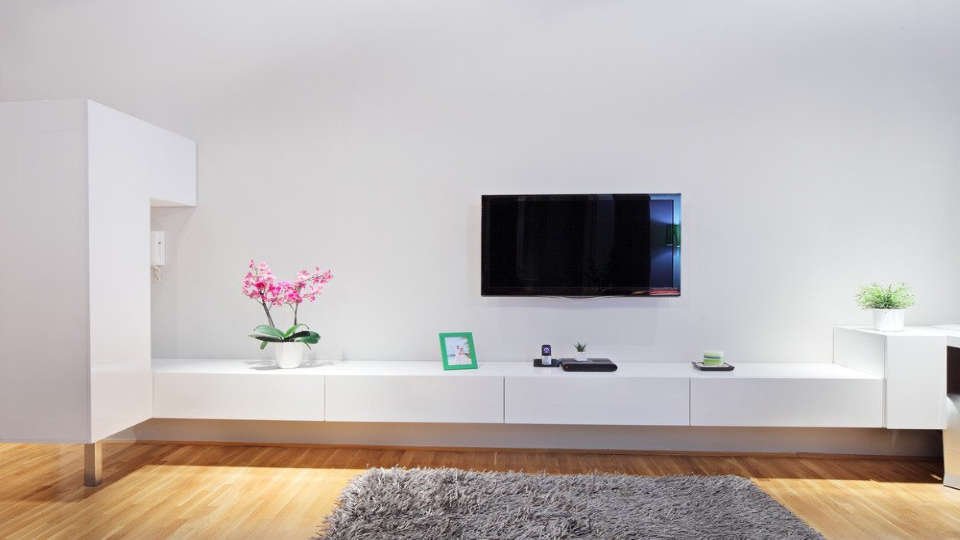 |
Lies die Bilder ein und konvertiere sie zunächst mit der Funktion rgb2gray in Graustufenbilder.
Erweitere das Skript nun so, dass ein Filter mit einem Kernel von 3x3 Pixeln angewandt werden kann:
Matlab code:
clc
clear workspace
close all
pathPflanze = 'images\pflanze_original.bmp';
pathWand = 'images\wand_original.bmp';
imagePflanze = imread(pathPflanze);
imageWand = imread(pathWand);
pPf_gray = rgb2gray(imagePflanze);
pWand_gray = rgb2gray(imageWand);
imwrite(pPf_gray,'result\pflanze_gray.bmp');
imwrite(pWand_gray,'result\wand_gray.bmp');
run(pPf_gray, 'pflanze');
run(pWand_gray, 'wand');
function run(gray, file)
H = [1 1 1; 1 1 1; 1 1 1]/9;
Y = filter2(H,gray,'full')/255;
figure
subplot(1,2,2);
imshow(Y);
title("nachher");
subplot(1,2,1);
imshow(gray);
title("vorher");
name = strcat('result\',file,'_weich', '.bmp');
imwrite(Y, name);
end
| Filter | Pflanze | Wand |
|---|---|---|
| Grau | ||
| Weich | 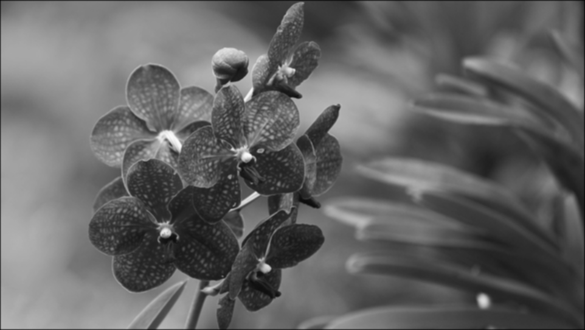 | 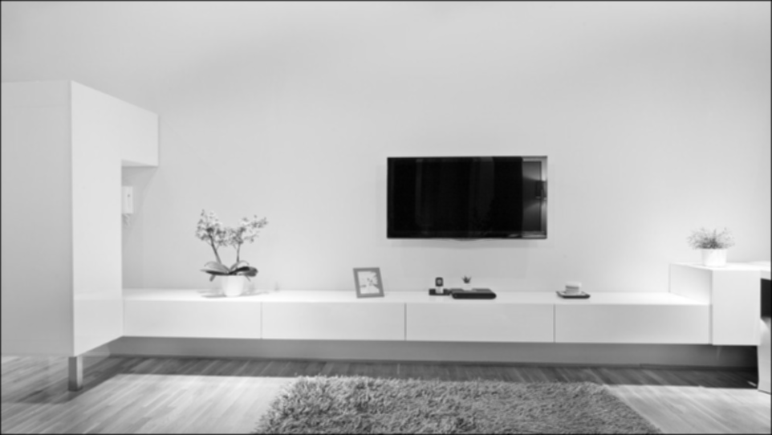 |
Erweitere das Skript so, dass das Differenzbild zwischen dem gefilterten und dem Originalbild
berechnet werden kann! Dieses muss offensichtlich die Information zeigen, die das Filter entfernt
hat. Beachte dabei, dass du das Differenzbild in den Bereich 0-255 verschieben und möglicherweise
im Kontrast verstärken musst (siehe Übung 6).
Matlab code:
clc
clear workspace
close all
pathPflanze = 'images\pflanze_original.bmp';
pathWand = 'images\wand_original.bmp';
imagePflanze = imread(pathPflanze);
imageWand = imread(pathWand);
pPf_gray = rgb2gray(imagePflanze);
pWand_gray = rgb2gray(imageWand);
pflanze_weich = imread('result\pflanze_weich.bmp');
wand_weich = imread('result\wand_weich.bmp');
pflanze_weich = pflanze_weich(1:540,1:960);
wand_weich = wand_weich(1:540,1:960);
difference_pf = (pPf_gray - pflanze_weich);
difference_wand = (pWand_gray - wand_weich);
imshow(difference_pf);
imshow(difference_wand);
imwrite(difference_pf, 'result\pflanze_diff.bmp');
imwrite(difference_wand, 'result\wand_diff.bmp');
imwrite(difference_pf * 10, 'result\pflanze_kontrast.bmp');
imwrite(difference_wand * 10, 'result\wand_kontrast.bmp');
| Format | Pflanze | Wand |
|---|---|---|
| Weich | ||
| Differenz | 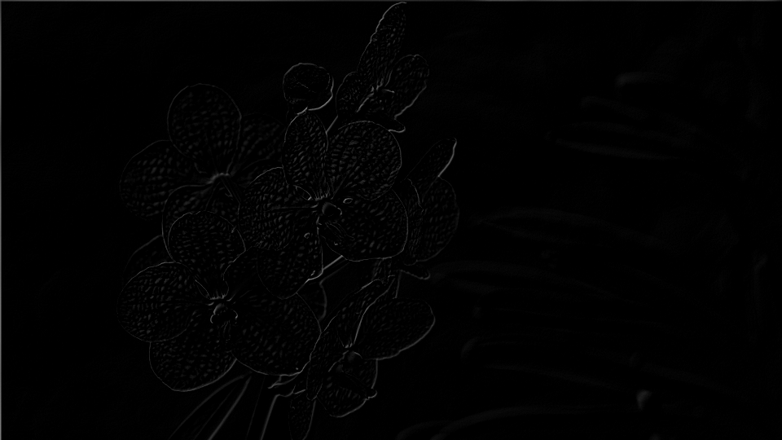 | 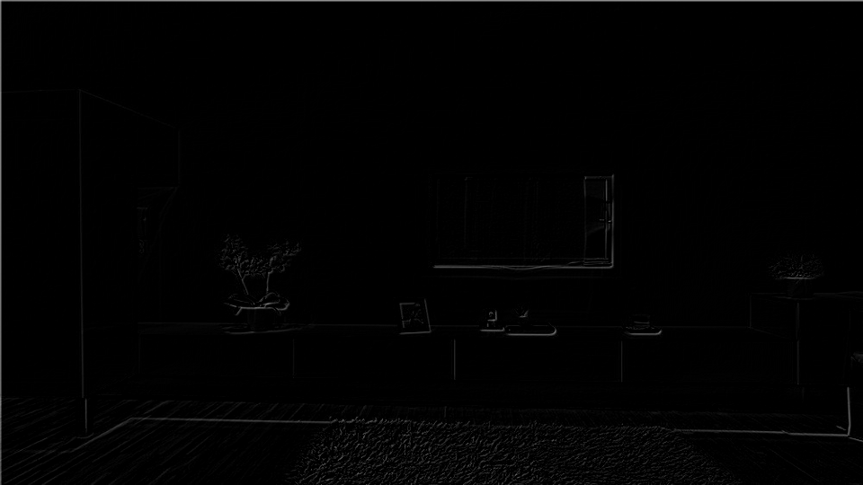 |
| Kontrast | 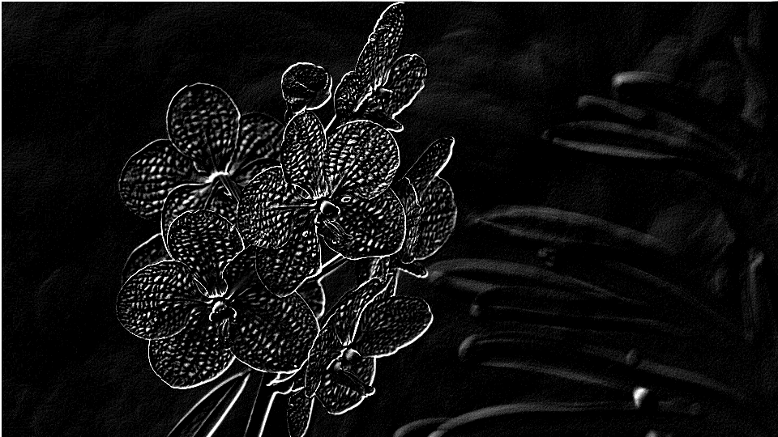 | 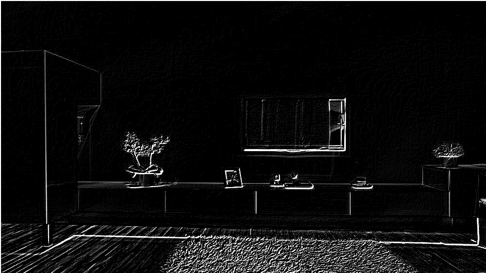 |
a) Wende nun den folgenden 3*3 Kernel auf deine Bilder an! Beachte dabei, dass bei der Anwendung
der Vorschrift Werte < 0 oder> 255 entstehen können und entsprechend behandelt werden müssen!
b) Berechne wiederum das Differenzbild zwischen dem gefilterten und dem Originalbild! Beachte
dabei ebenfalls, dass du das Differenzbild möglicherweise im Kontrast verstärken musst.
Matlab code:
clc
clear workspace
close all
pathPflanze = 'images\pflanze_original.bmp';
pathWand = 'images\wand_original.bmp';
imagePflanze = imread(pathPflanze);
imageWand = imread(pathWand);
pPf_gray = rgb2gray(imagePflanze);
pWand_gray = rgb2gray(imageWand);
H = [0 -2 0; -2 12 -2; 0 -2 0];
Y1 = filter2(H,pPf_gray/255,'full');
Y2 = filter2(H,pWand_gray/255,'full');
imwrite(Y1 /4, 'result\gradientenfilter_pflanze.bmp');
imwrite(Y2 /4, 'result\gradientenfilter_wand.bmp');
Y1 = Y1(1:540,1:960) *40;
Y2 = Y2(1:540,1:960) *40;
% Muss angepasst werden
double_pf = im2double(pPf_gray);
double_wand = im2double(pWand_gray);
im1 = double_pf - Y1;
im2 = double_wand - Y2;
imwrite(im1, 'result\gradientenfilter_kontrast_pflanze.bmp');
imwrite(im2, 'result\gradientenfilter_kontrast_wand.bmp');
figure
imshow(im1);
figure
imshow(im2);
| Gradient | Pflanze | Wand |
|---|---|---|
| Gradientenfilter | 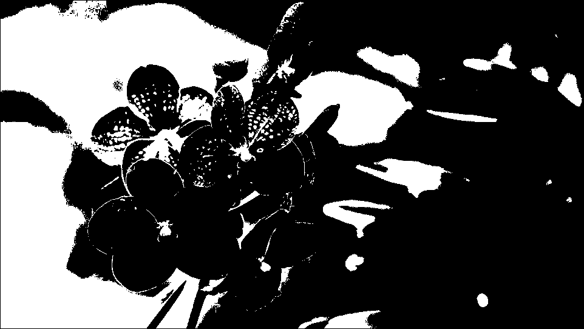 | 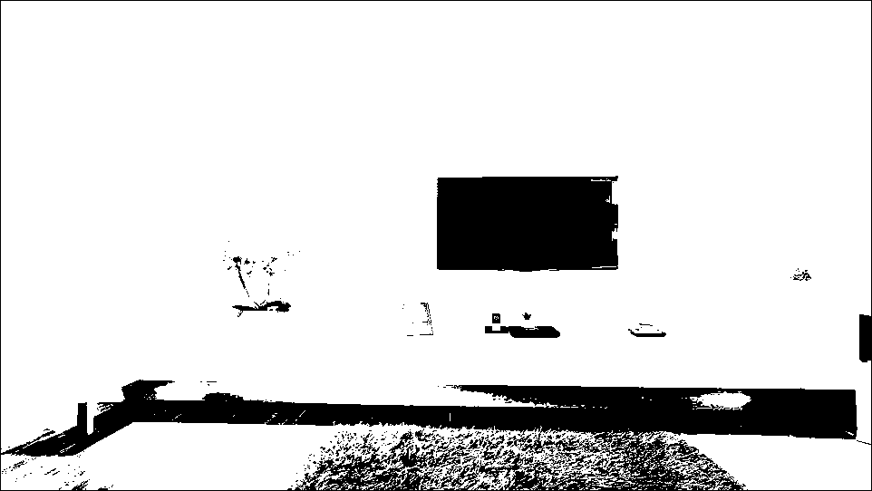 |
| Gradientenfilter Kontrast | 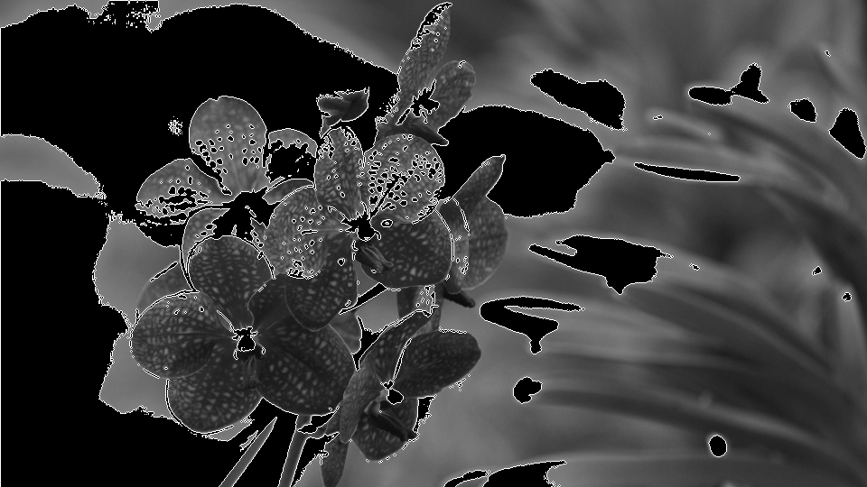 | 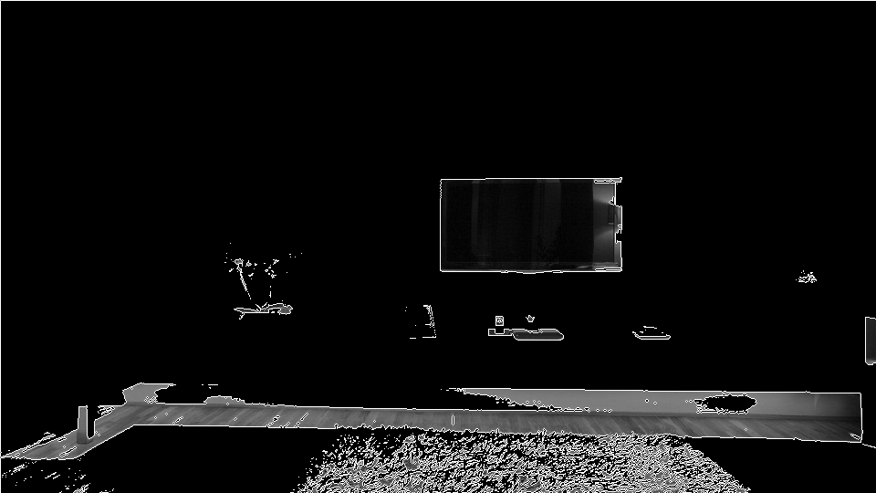 |
Die DCT transformiert ein Pixelbild in seine Ortsfrequenzen. Berechne die DCT für deine beiden
Bilder, indem du das komplette Bild nach Anwendung von rgb2gray mit der Funktion dct2 in den
Ortsfrequenzbereich transformierst und stelle die DCT-Koeffizienten wieder als Graustufenbild dar.
Dazu müssen die Werte der DCT-Koeffizienten ggf. skaliert und wieder in den Bereich von 0 bis 255
verschoben werden.
Matlab code:
clc
clear workspace
close all
pathPflanze = 'images\pflanze_original.bmp';
pathWand = 'images\wand_original.bmp';
imagePflanze = imread(pathPflanze);
imageWand = imread(pathWand);
pPf_gray = rgb2gray(imagePflanze);
pWand_gray = rgb2gray(imageWand);
dct_pflanze = dct2(pPf_gray)/255;
dct_wand = dct2(pWand_gray)/255;
s1 = size(dct_pflanze);
pf_height = s1(1);
pf_width = s1(2);
s2 = size(dct_wand);
wand_height = s2(1);
wand_width = s2(2);
mod_dct_pflanze = zeros(pf_height, pf_width);
mod_dct_wand = zeros(wand_height, wand_width);
for rP = 1:pf_height
for cP = 1:pf_width
if dct_pflanze(rP, cP) < 0
continue;
elseif dct_pflanze(rP, cP) > 255
mod_dct_pflanze(rP, cP) = 255;
else
mod_dct_pflanze(rP, cP) = dct_pflanze(rP, cP);
end
end
end
for rM = 1:wand_height
for cW = 1:wand_width
if dct_wand(rM, cW) < 0
continue;
elseif dct_wand(rM, cW) > 255
mod_dct_wand(rM, cW) = 255;
else
mod_dct_wand(rM, cW) = dct_wand(rM, cW);
end
end
end
figure
imshow(mod_dct_pflanze);
imwrite(dct_pflanze,'result\dct_pflanze.bmp');
figure
imshow(mod_dct_wand);
imwrite(dct_wand,'result\dct_wand.bmp');
| Pflanze | Wand |
|---|---|
| 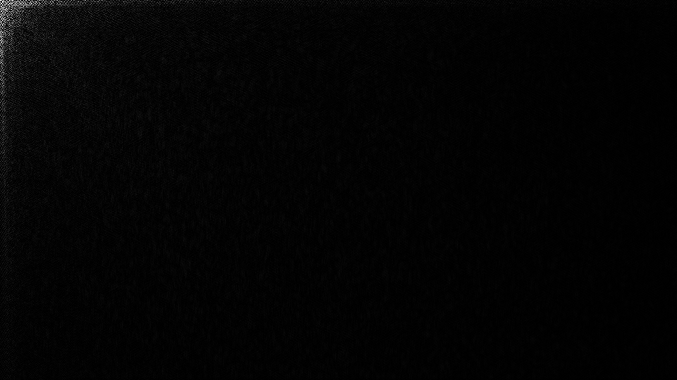 |
Erkläre das Aussehen des Bildes der Transformation an Hand der Strukturen in deinen Bildern. Nun
setze im Ergebnis der DCT, d.h. der Matrix der DCT-Koeffizienten, Werte mit einem Index (x,y)
a) > (128,128)
b) > (64,64)
c) > (16,16) auf 0 und transformiere die modifizierte Matrix der DCT Koeffizienten wieder in den
Pixelbereich, indem du idct2 verwendest. Wie verändert sich dein ursprüngliches Bild? Erkläre,
0 -2 0
-2 12 -2
0 -2 0
was die genannte Operation prinzipiell für einen Effekt hat, indem du die Bedeutung der DCT
Koeffizienten interpretierst.
Matlab code:
clc
clear workspace
close all
pathPflanze = 'result\dct_pflanze.bmp';
pathWand = 'result\dct_wand.bmp';
dct_pf = imread(pathPflanze);
dct_wand = imread(pathWand);
run(16, dct_pf, 'pflanze', dct_wand, 'wand');
run(64, dct_pf, 'pflanze', dct_wand, 'wand');
run(128, dct_pf, 'pflanze', dct_wand, 'wand');
function run(gr, image1, file1, image2, file2)
s1 = size(image1);
pf_height = s1(1);
pf_width = s1(2);
s2 = size(image2);
wand_height = s2(1);
wand_width = s2(2);
for rP = 1:pf_height
for cP = 1:pf_width
if image1(rP, cP) > gr
image1(rP, cP) = 0;
end
end
end
for rM = 1:wand_height
for cW = 1:wand_width
if image2(rM, cW) > gr
image2(rM, cW) = 0;
end
end
end
idct_pflanze = idct2(image1/255);
name1 = strcat('result\idct_', file1,'_',int2str(gr),'.bmp');
imwrite(idct_pflanze, name1);
idct_wand = idct2(image2/255);
name2 = strcat('result\idct_', file2,'_',int2str(gr),'.bmp');
imwrite(idct_wand, name2);
end
| Format | Pflanze | Wand |
|---|---|---|
| (128,128) | ||
| (64,64) | |
|
| (16,16) | |